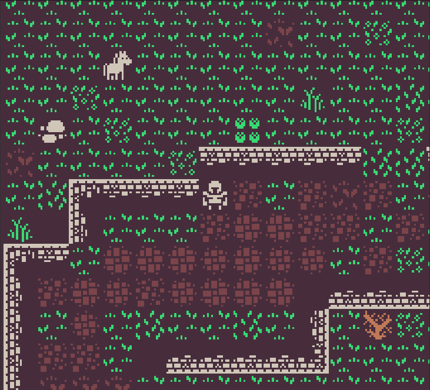

Hi there, my name is Jack Chambers and this is my personal website.
At the moment it is a bit bare, but I will be updating it over time with info on projects I am working on. Currently,
I am interested in using 3D graphics in a web context and learning game development principles and frameworks, especially Unity.
I have 5+ years of experience working in the IT field with companies of various sizes in San
Francisco and Seattle. I am currently based out of Oakland, California.
I am currently looking for IT Engineer and Junior Software Developer roles. You can view my
resume here.
The source for this website can be found on github.
At the moment, it is a static website hosted on AWS.
Three.js provides the WebGL rendering and composition, and Node provides the routing and local development environment.
Projects
You can view the repos for various personal projects I've worked on on my github.
Homecoming

This is a vertical slice prototype for a video game I'm currently working on in Unity. It's intentionally no-frills, and is meant
to be a synthesis of various development, design, and project management topics I have been teaching myself over the past few months.
It currently has a choice-driven dialog system, an interactive tile-based environment using Unity's built-in Tilemaps and ScriptableObjects,
grid-based player movement, and various other basic features.
Besides basing tiles off of a free asset pack from Kenney.nl,
everything else has been built from scratch using Unity and its C# API.
I will upload the source code to github once it is complete, and try to embed a WebGL build of it on this page soon after.
Looking for Group
(If it doesn't set automatically, my demonstration starts at 47:39.)
This was my capstone project for Actualize, a full-stack bootcamp for Ruby on Rails, Vue.js, and Postgresql that I attended in 2017.
It was meant to function as a supplemental tool for finding people to play multiplayer games with, especially games with smaller
playerbases or otherwise do not have robust community tools. It integrates with your Steam library and allows the user to select which games
they are looking for others to play with. This was a really rewarding project to work on, and helped solidify a lot of the foundational knowledge the bootcamp taught us.
You can view the source code here.
Inspirations: Y2K-era digital media, 90s UK rave optimism, Playstation 1 soundtracks (esp. the work of Soichi Terada),
golden era jungle, Hiroshi Yoshimura, Lorenzo Senni's pointilistic trance, nightcore, social isolation,
Ursula K. LeGuin's speculative visions of a more just world,
the sci-fi body horror works of John Carpenter and Junji Ito, 2001: A Space Odyssey
Tracklist available on request.
I recorded a more improvised version of this mix live on Twitch for a few friends at the beginning of quarantine in March of 2020.
This version is a more refined draft which aired on Lower Grand Radio sometime in May.
When the feeling of being separated from your friends and the outside world still felt novel,
I felt compelled to record something that encompassed the wide range of emotions that came with adjusting to life in isolation.
This mix oscillates between feelings of remiscience and gratitude for those that you love, the existential anxiety of uncertainty,
the questioning of one's own identity in the face of an untenable status quo, and the prospective joy at the possibility of a more just world.
All the tracks chosen are somewhere in the 150-165 bpm range, with some being squeezed or stretched to fit those bounds.
I have always been fond of "faster" dance music genres, especially jungle, due to its ability to balance driving rhythmic patterns and infectious dancehall samples with meandering,
gauzy synth pads in order to create a deceptively broad tonal palette. Often, jungle and drum n' bass tracks evoke feelings of an out-of-control
sports car with its jacking rhythm section, while simultaneously imbuing the listener with a transcendental sense of calm through its melodic composition,
whose patterns often play at half-time, or roughly 80 bpm.
That both of these emotions exist in the same ostensibly cooperative sonic space continues to fascinate me as a listener and as an artist.
This internal contradiction of speed and contemplation is to me emblematic of our current moment.
The rate of societal change caused by technology and financial capitalism, coupled with large-scale failures in justice, epidemiology, equality, and ecology can feel incredibly overwhelming at an individual scale.
However, it is in this space of uncertainty that the possibility to create something new exists.
The tracks on this mix which evoke malaise and hopelessness are buoyed with tracks of ecstasy and optimism in the same way similarly contradictory feelings can coexist in everyday life.